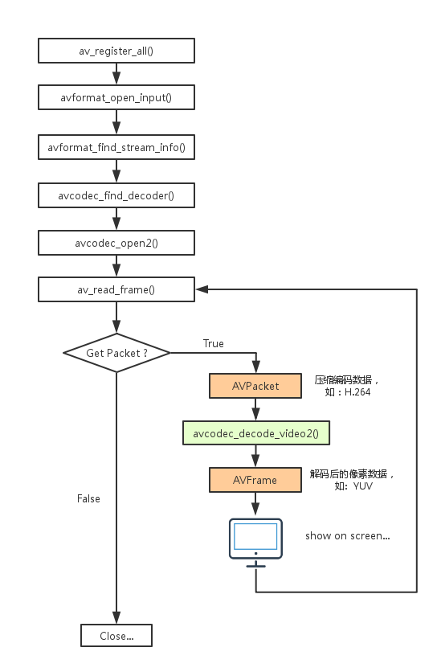
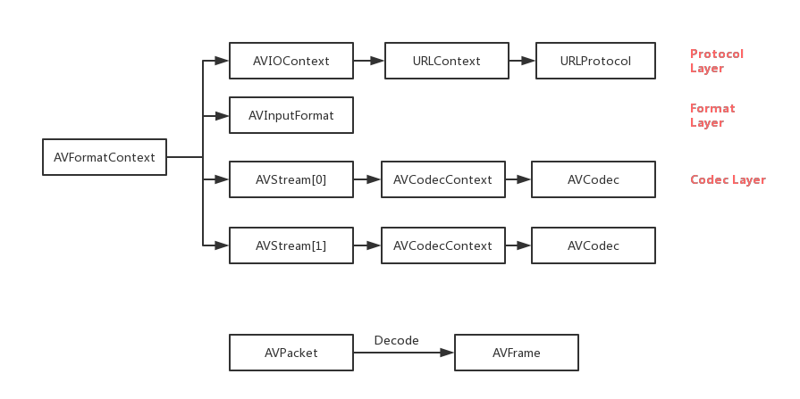
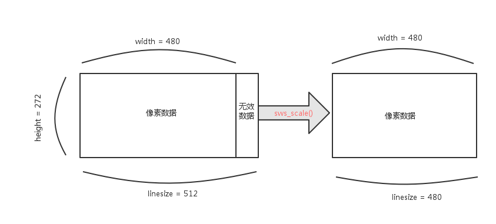

FFmpeg 库简介
FFmpeg 一共包含 8 个库：
- avcodec 编解码（最重要的库）
- avformat 封装格式处理
- avfilter 滤镜特效处理
- avdevice 各种设备的输入输出
- avutil 工具库
- postproc 后加工
- swresample 音频采样数据格式转换
- swscale 视频像素数据格式转换
FFmpeg 视频解码流程

更详细的可以参照这里
解释：
- av_register_all() 注册所有组件
- avformat_open_input() 打开输入视频文件
- avformat_find_stream_info() 获取视频文件信息
- avcodec_find_decoder() 查找解码器
- avcodec_open2() 打开解码器
- av_read_frame() 从输入文件读取一帧压缩数据，例如这里的 H.264
- avcodec_decode_video2() 解码一帧压缩数据
- avcodec_close() 关闭解码器
- avformat_close_input() 关闭输入视频文件
FFmpeg 解码的数据结构

FFMPEG中的结构体很多，最关键的结构体可以分为以下几类：
a）解协议（http、rtsp、rtmp、mms）
AVIOContext、URLContext、URLProtocol主要存储音视频使用的协议类型以及状态。URLProtocol存储输入音视频使用的封装格式。每种协议都对应一个URLProtocol结构。
b）解封装（flv、avi、rmvb、mp4）
AVFormatContext主要存储音视频封装格式中包含的信息；AVInputFormat存储输入音视频使用的封装格式，每种格式对应一个AVInputFormat结构。
c）解码（h264、mpeg2、aac、mp3）
每个AVStream存储一个音频/视频流的相关数据；每个AVStream对应一个AVCodecContext，存储该音频/视频流使用解码方式的相关数据；每个AVCodecContext中对应一个AVCodec，包含该音频/视频对应的解码器。每种解码器对应一个AVCodec结构。
d）存数据
就音频而言，每个结构可能有好几帧；视频的话，每个结构一般是一帧。
AV - 指的是 Audio and Video
AVFormatContext
AVFormatContext 封装格式的上下文结构体，也是统领全局的结构体，包含了视频封装格式最外层的信息。
- iformat: 输入视频的 AVInputFormat
- nb_stream: 输入视频的 AVStream 个数
- streams: 输入视频的 AVStream[] 数组
- duration: 输入视频的时长（以微妙为单位）
- bit_rate: 输入视频的码率（码率越高视频越清晰）
- …..
AVInputFormat
AVInputFormat 指明了输入文件的封装格式，比如 flv、mkv、mp4、avi等；每种封装格式对应一个该结构体。
- name: 封装格式名称
- long_name: 封装格式的长名称
- extensions: 封装格式的拓展名
- id: 封装格式 ID
- …..
AVStream
一般 AVStream[0] 代表的是视频流；AVStream[1] 代表的是音频流。
视频文件中每个视频（音频）流对应一个该结构体。
- id: 序号
- codec: 该流对于的 AVCodecCoontext
- time_base: 该流的时基
- r_frame_rate: 该流的帧率
- …..
AVCodecContext
编码器上下文结构体，保存了视频（音频）编解码相关信息。
- codec: 编码器的 AVCodec
- width，height: 图像的宽高（只针对视频）
- pix_fmt: 像素格式（只针对视频）
- sample_rate: 采样率（只针对音频）
- channels: 声道数（只针对音频）
- sample_fmt: 采样格式（只针对音频）
- …..
AVCodec
每种视频（音频）编解码器（例如 H.264 解码器）对应一个该结构体。
- name: 编解码器名称
- long_name: 编解码器长名称
- type: 编解码器类型
- id: 编解码器 ID
- ….
AVPacket
存储一帧压缩编码数据。
- pts: 显示时间戳
- dts: 解码时间戳
- data: 压缩编码数据
- size: 压缩编码数据大小
- stream_index: 所属的 AVStream，可以用于区分到底是视频流还是音频流
AVFrame
存储一帧解码后像素（采样）数据。
- data: 解码后的图像数据数据（音频采样数据）
- linesize: 对视频来说是图像中一行像素的大小；对音频来说是整个音频帧的大小
- width，height: 图像的宽高（只针对视频）
- key_frame: 是否为关键帧（只针对视频）
- pict_type: 帧类型（只针对视频），例如：I 帧、P 帧、B 帧
补充小知识点
1.解码后的数据为什么要经过 sws_scale() 函数处理？
- 解码后 YUV 格式的视频像素数据保存在 AVFrame 的 data[0]、data[1]、data[2] 中（data[0]保存的是 Y 帧数据，data[1]保存的是 U 帧数据，data[2]保存的是 V 数据。）。但是这些像素值并不是连续存储的。每行有效像素之后存储了一些无效像素。以亮度 Y 数据为例 data[0] 中包含了 linesize[0] * height 个数据。但是出于优化等方面的考虑，linesize[0] 实际上并不等于宽度 width，而是一个比宽度大一些的值。因此需要使用 sws_scale() 进行转换。转换后去除了无效数据，width 和 linesize[0] 取值相等。

2.上面讲到了码率和帧率，那么码率和帧率到底有什么区别呢？
码率就是数据传输时单位时间传送的数据位数,一般我们用的单位是kbps即千位每秒。通俗一点的理解就是取样率，单位时间内取样率越大，精度就越高，处理出来的文件就越接近原始文件，但是文件体积与取样率是成正比的，所以几乎所有的编码格式重视的都是如何用最低的码率达到最少的失真，围绕这个核心衍生出来的cbr（固定码率）与vbr（可变码率），都是在这方面做的文章，不过事情总不是绝对的，从音频方面来说，码率越高，被压缩的比例越小，音质损失越小，与音源的音质越接近。“码率”就是失真度，码率越高越清晰，反之则画面粗糙而多马赛克。计算机中的信息都是二进制的0和1来表示，其中每一个0或1被称作一个位，用小写b表示，即bit（位）；大写B表示byte,即字节，一个字节＝八个位，即1B＝8b；前面的大写K表示千的意思，即千个位（Kb)或千个字节(KB)。表示文件的大小单位，一般都使用字节（KB）来表示文件的大小。
Kbps：首先要了解的是，ps指的是/s，即每秒。Kbps指的是网络速度，也就是每秒钟传送多少个千位的信息（K表示千位，Kb表示的是多少千个位），为了在直观上显得网络的传输速度较快，一般公司都使用kb（千位）来表示，如果是KBps，则表示每秒传送多少千字节。1KBps＝8Kbps。ADSL上网时的网速是512Kbps,如果转换成字节，就是512/8＝64KBps(即64千字节每秒）。
帧数简单地说，帧数就是在1秒钟时间里传输的图片的帧数，也可以理解为图形处理器每秒钟能够刷新几次，通常用fps（Frames Per Second）表示。每一帧都是静止的图象，快速连续地显示帧便形成了运动的假象。高的帧率可以得到更流畅、更逼真的动画。每秒钟帧数 (fps) 愈多，所显示的动作就会愈流畅。一般来说30fps是可以接受的，所以要避免动作不流畅的最低fps是30。除了30fps外，有些计算机视频格式，例如AVI，每秒只能提供15帧。我们之所以能够利用摄像头来看到连续不断的影像，是因为影像传感器不断摄取画面并传输到屏幕上来，当传输速度达到一定的水平时，人眼就无法辨别画面之间的时间间隙，所以大家可以看到连续动态的画面。
每秒的帧数（fps）或者说帧率表示图形处理器场景时每秒钟能够更新几次。高的帧率可以得到更流畅、更逼真的动画。一般来说30fps就是可以接受的，但是将性能提升至60fps则可以明显提升交互感和逼真感，但是一般来说超过75fps一般就不容易察觉到有明显的流畅度提升了。如果帧率超过屏幕刷新率只会浪费图形处理的能力，因为显示器不能以这么快的速度更新，这样超过刷新率的帧率就浪费掉了。
一般用“FPS(frame per second，每秒钟画面更新的数量)”来表示该项指标。在欣赏电视、电影画面时，只要画面的刷新率达到24帧/秒，就能满足人们的需要。同样的，在玩普通的游戏时，如果刷新率达到24帧/秒即可，但在一些高速游戏中(例如射击游戏)，如果画面的刷新率还是只有24帧/秒，那么就会感觉到画面比较迟钝，不够流畅。 虽然理论上画面的刷新率越快越好，但过高的刷新率并没有实际意义——当画面的FPS达到60帧/秒时，已经能满足绝大部分应用需求。一般情况下，如果能够保证游戏画面的平均FPS能够达到30帧/秒，那么画面已经基本流畅；能够达到50帧/秒，就基本可以体会到行云流水的感觉了。一般人很难分辨出60帧/秒与100帧/秒有什么不同。
参考链接：